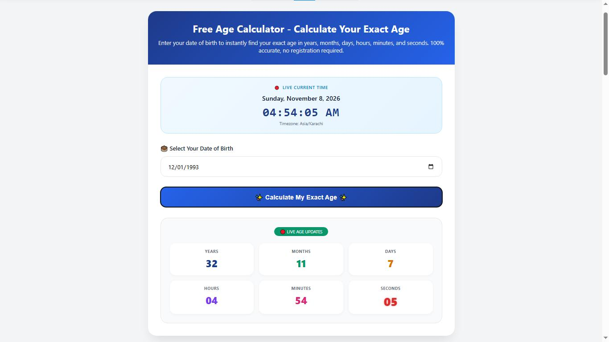

Free Age Calculator - Calculate Your Exact Age
Enter your date of birth to instantly find your exact age in years, months, days, hours, minutes, and seconds. 100% accurate, no registration required.
Age Calculator: Calculate Your Exact Age by Date of Birth
✍️ By Zain Uddin | 📅 Updated: November 2026 | ⏱️ 4 min read
Knowing your exact age can be useful for many everyday situations, from checking birthday milestones to completing school forms, job applications, and personal records. Our free online Age Calculator helps you find the time between your date of birth and today's date without manually counting years, months, and days. Simply enter your date of birth to see your age in years, months, days, hours, minutes, and seconds. The calculator also accounts for different month lengths and leap years when calculating calendar-based age. Whether you want to check your current age or find out how many days you have lived, this tool provides an easy way to get the information you need.

Screenshot: Free Age Calculator showing exact age result
📝 How to Use the Age Calculator (3 Easy Steps)
Follow these three simple steps to calculate your exact age online:
Step 1: Enter Your Date of Birth
Select your birth date using the date picker at the top of the page. Enter your birth year, month, and day. The calculator supports dates from 1900 up to the present day.
Step 2: Click "Calculate My Exact Age"
After entering your date of birth, click the Calculate My Exact Age button. Your result will show your age in years, months, days, hours, minutes, and seconds.
Step 3: View Your Live Age
Your age in seconds updates live, allowing you to see how the time you have lived changes. You can use this feature to explore your age and celebrate personal milestones.
🎂 Calculate Your Exact Age Now – Free
Get years, months, days, hours, minutes & seconds — instantly.
👉 Use Age Calculator Free🧬 Different Types of Age Calculators
Depending on what you need it for, there are actually several different types of age calculations out there. Here are the most common ones our tool helps with:
- Standard Age Calculator: The most common tool to find your exact age from your DOB. Perfect for everyday use.
- Adjusted Age Calculator / Corrected Age Calculator: Essential for premature babies. If your little one was born early, you can use this as a preemie adjusted age calculator to accurately track their developmental milestones.
- Biological Age Calculator: This estimates how old your body actually is based on your lifestyle and health metrics, which can be different from your chronological age.
- Metabolic Age Calculator: Compares your Basal Metabolic Rate (BMR) to the average BMR of people your age.
- Pearson Chronological Age Calculator: Commonly used by speech-language pathologists (SLPs), OTs, and psychologists for clinical assessments (a great alternative to the discontinued Pearson Q-Global).
- ASQ Age Calculator: Used by pediatricians and parents for the Ages & Stages Questionnaires developmental screening.
- Menopause Age Calculator: Predicts the average age of menopause based on genetics and lifestyle factors.
- School Age Calculator: Determines if your child is eligible for a specific grade based on the school's cutoff date.
- Retirement Age Calculator by Date of Birth: Helps you figure out the exact date you become eligible for retirement benefits.
📊 How to Calculate Age in Excel (Formula)
A lot of people prefer doing this themselves in Excel or Google Sheets. If you search for "calculate age from date of birth in excel", here is the most accurate formula to use:
Just replace A1 with the cell containing the date of birth. This handles the excel age calculation from birth date perfectly, including all those tricky leap years.
❓ Frequently Asked Questions
Q1: How is age calculated exactly?
Instead of simply dividing total days by 365, this tool uses a sequential borrowing method (days → months → years). It automatically accounts for leap years and months with 28, 29, 30, or 31 days for total accuracy.
Q2: Can I use this to check job or exam eligibility?
Yes, absolutely. It's very helpful for verifying strict age limits and relaxations for government job applications (like PPSC, FPSC, NTS) based on the closing date mentioned in the advertisement.
Q3: What is the "Age Calculator Geekzilla.io" tool?
Geekzilla is another popular platform known for its age calculation interface. Our tool offers the exact same precise results (years, months, days) but with a much faster, cleaner, and ad-light experience.
Q4: Does the tool store my date of birth?
No, never. Your privacy is important. The entire calculation happens locally in your browser, meaning your date of birth is never saved or uploaded to any server.
🏁 Conclusion
To sum it up, whether you need a standard age calculation, an adjusted age for a premature baby, or just want to check how many seconds you've been alive, this free age calculator has you covered. It's fast, 100% accurate, and completely private.
🎂 Calculate Your Age Now – Free
🔗 Share This Tool
Found this helpful? Share the Age Calculator with your friends and family!

About the Author: Zain Uddin
Founder, FreeOnlineTools203.com | Web Developer & SEO Expert
Hi, I'm Zain Uddin. I built FreeOnlineTools203.com to offer 240+ free online tools across 18 categories. With over 3 years of experience in web development, SEO, and freelancing (Fiverr), I personally build and test every tool to ensure it works perfectly for you.